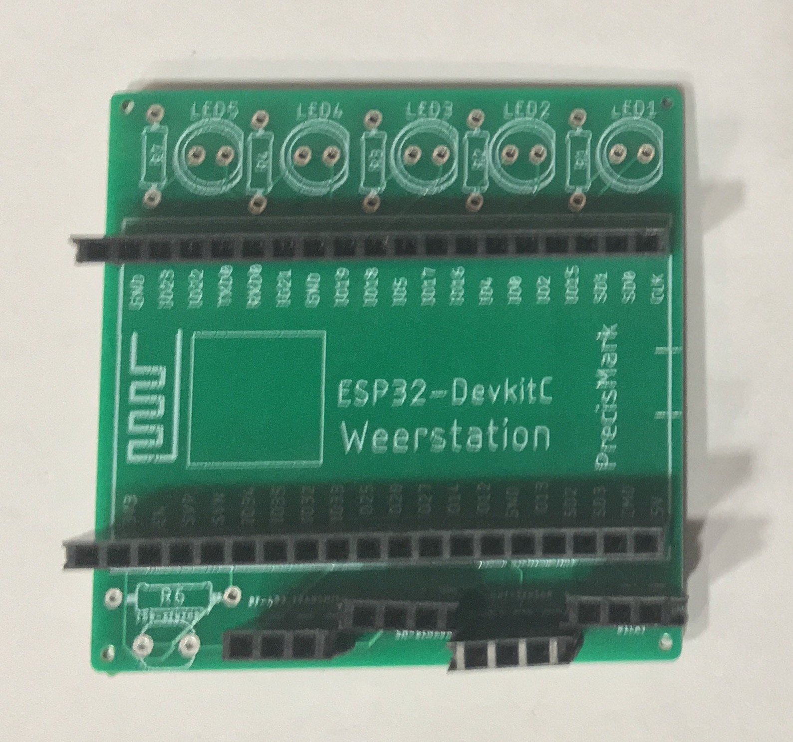
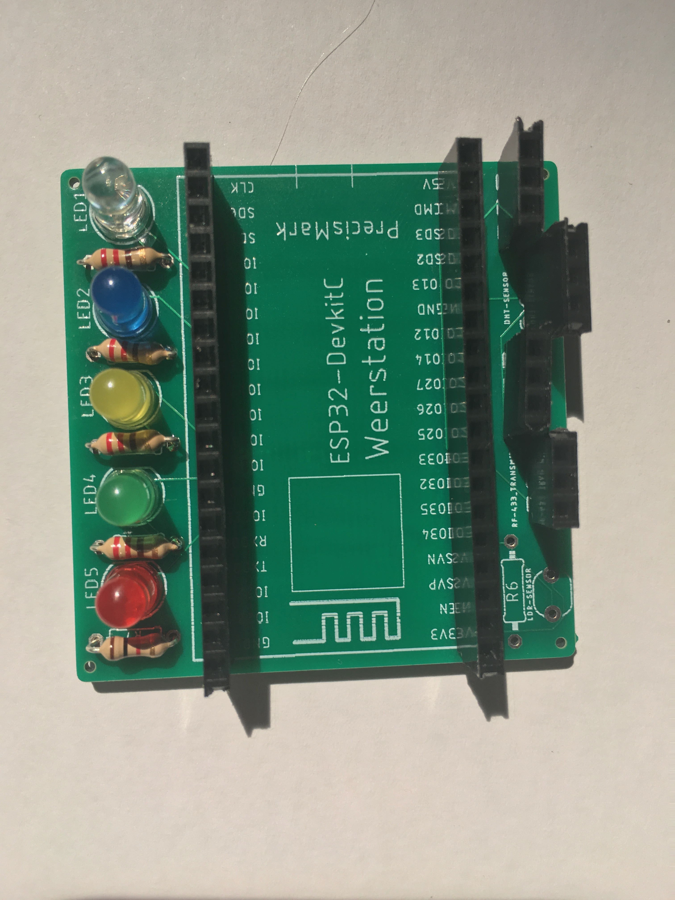
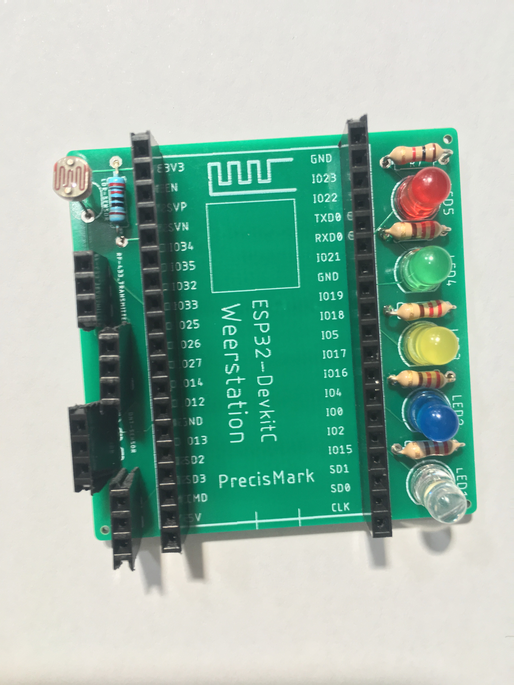
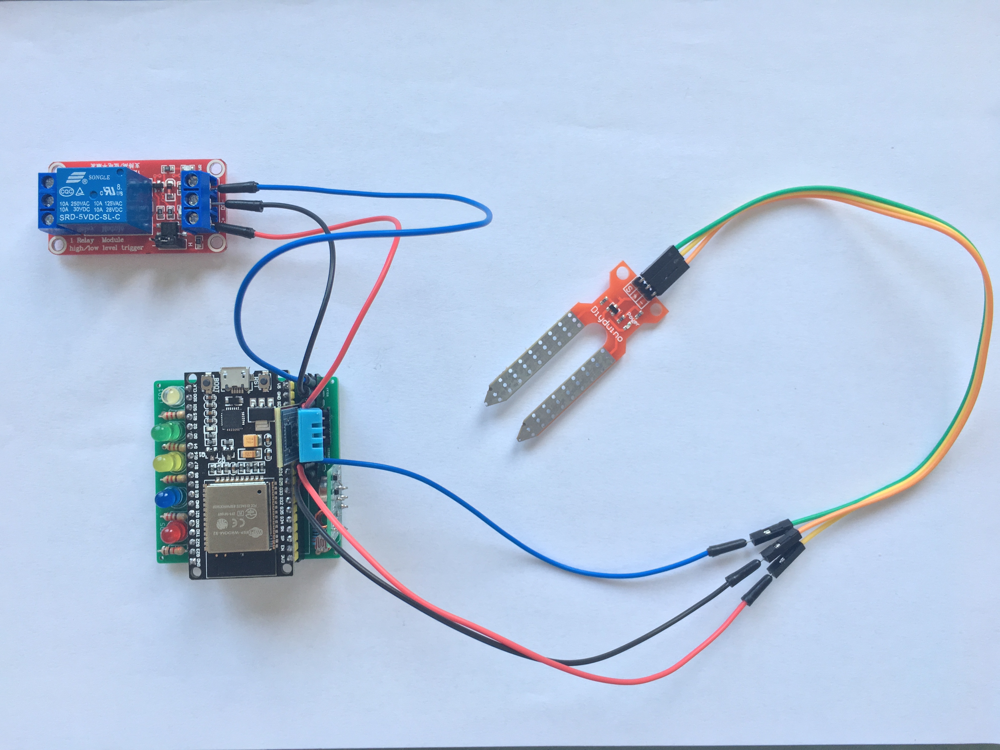

Solderen
Zodra de zelf ontworpen PCB is aangekomen kan deze in elkaar gezet worden. Om te voorkomen dat het rommelig en ingeikkelder wordt dan nodig. Staat hieronder stapsgewijs een aanpak toegelicht.

Pinnen
Alleer eerste worden de pinnen vast gesoldeerd. Twee rijen voor de controller. En viermaal een rij van drie voor de losse sensoren.

from machine import Pin, ADC
import utime
ldrp = Pin(21, Pin.OUT)
adc = ADC(Pin(39))
adc.atten(ADC.ATTN_11DB)
print(adc.read())
p21 = Pin(21, Pin.OUT) # create output pin on GPI21
while True:
ldrp.value(1)
ligth = adc.read()
print("light", ligth)
ligtsterkte = 1000
print("light smaler than ligtsterkte", ligth < ligtsterkte)
if (ligth < ligtsterkte):
p21.on() # set pin to "on" (high) level
else:
p21.off()
print("off") # set pin to "off" (low) level
utime.sleep_ms(1000)
LED's
De LED's zijn gesoldeerd samen met de weerstanden.

from machine import Pin, ADC import utime from machine import Pin p18 = Pin(18, Pin.OUT) # I use pin 33 for this! adc = ADC(Pin(33)) for x in range (0, 50): soil_moisture = adc.read() print(soil_moisture) p18.on() utime.sleep(0.5) p18.off() utime.sleep(5)
LDR
Als laatste wordt de LDR gesoldeerd. Deze sensor is heel gevoellig voor hitte. Bij deze sensor is het altijd verstandig om deze als een van de laatste te bevestigen aan de PCB.

import dht import machine import utime from machine import Pin p4 = Pin(4, Pin.OUT) d = dht.DHT11(machine.Pin(12)) d.measure() d.temperature() # eg. 23 (°C) d.humidity() # eg. 41 (% RH) for x in range(1, 50): p4.on() print("temperature", d.temperature(), "c") print("humidity", d.humidity(), "%") print("") utime.sleep_ms(10) p4.off() utime.sleep_ms(1000) # set pin to "on" (high) level
Final product
Nu zijn alle vaste onderdelen gesoldeerd op de PCB. Nu kunnen de sensoren er los ingeplukt worden. Zoals op de afbeelding weergegeven.